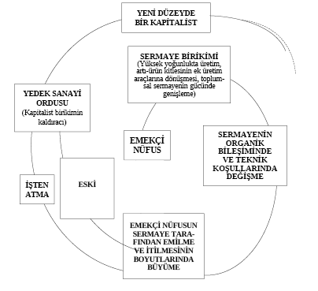
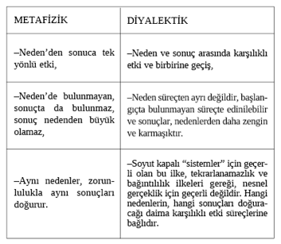

i- Metafizik Nedensellik Teorileri:
Neden ve sonuç arasındaki ilişkinin “evrensel ve zorunlu” olduğu yolundaki inanç, bir kez nedenlerin bilinmesiyle, bütün zamanlar için bütün sonuçların bilinebileceği düşüncesinin doğuşuna yol açtı.
Antik doğa filozofları, evrenin bağıntılı bir bütün olduğu düşüncesini, tek bir “kaynak madde” ile, yani, her şeyin başlangıcında bulunan ve kendisinden önce başka bir şeyin bulunmasına gerek bulunmayan, her şeyi doğuran fakat kendisi doğmamış olan bir “ilk madde” kavramıyla temellendirmişlerdi.
Sonraki felsefi sistemlerde de, “başlangıç” ile devamı ve sonucu arasındaki ilişki probleminin değişik yanlar, değişik içerikler taşıyarak zenginleşip her sistemin en önemli düşünce konusu olarak ele alındığını, önceki bölümlerde gördük. Bu bağımlılık ve bağıntılılığın, sürekli, kopuşsuz ve gelişen bir ilişki olduğu düşüncesi de, başka biçimlerde ifade edilse de, hemen hemen ele aldığımız bütün sistemlerin ortaklaşa taşıdıkları bir ana fikirdi.
— Aristoteles’in Neden Öğretisi:
Konuyu, sistemli ve gününün koşullarına göre oldukça ileri bir “bilimsellik” düzeyinde ele almak gene ilk kez Aristoteles’in başarısı oldu.
Aristoteles’e göre, dört nedenin ayırt edilmesi, varoluşun kaynaklarını ve gelişmesini açıklamayı sağlayan dört biçimin ayırt edilmesiydi.
Bunlar şöyle özetlenebilir:
1. Maddi Neden ya da Tözsel Neden:
Aristoteles de, maddenin değişiminin her durağında, yeni biçimlere rağmen değişmeden kalan bir yan bulunduğunu düşünüyordu. Heykeltraş, bir mermeri yontuyor ve onu insan biçimine sokuyor; mermerin biçimi değişmiştir ama, maddesi değişmemiştir. Böylece, bütün değişmelerde, kendisini en son dayanak olarak koruyan, olup biten her şeyin ya kendisi üzerinde ya da kendisiyle birlikte gerçekleştiği bir “neden” vardır. Aristoteles’e göre, bu maddi neden’dir. Öyle ki, bu “neden”, herhangi bir biçim altında, biçimden ayrı olarak görülebilir. Heykelde mermer, masada kereste, kamada demir vs. olgusal bir öğe olarak, varoluşun dayandığı son öğe, ya da kendisinden daha geriye gidilemeyen öğe olarak bulunur.
Aristoteles’e göre, evrendeki dört temel öğe (Toprak, Su, Hava, Ateş), görünür dünyanın en yalın ve kendilerine dayanılan öğeleriydi; aynı zamanda, dünyanın “maddi tözsel nedenleri”ydi.
2. Biçimsel Neden:
Eğer madde, herhangi bir biçim’den yoksun olsaydı, varolamazdı, diye düşünüyor Aristoteles. Dört temel madde de, diğer bütün maddeler de, daima bir biçim altında bulunuyorlar. Öyle ki, biçim olmaksızın madde bir şey değildir. Mermer, ya ocaktan çıkarıldığı blok biçimine, ya heykeltraşın yonttuğu insan biçimine, bunun gibi pek çok ayrı biçime sahip olarak, bu biçimlere dayanarak, bu biçimlerin bir sonucu olarak varolabilecektir. Böylece varlığı, maddesi ile birlikte var eden bir diğer nedendir, “biçimsel neden.”
3. Hareket Ettirici Neden:
Mermer, durduğu yerde, kendi kendine insan biçimini alamaz. Biçimin değişmesi, bir biçimden başka biçime geçilebilmesi, ancak bir dış araca bağlıdır. Değişme ve hareketi sağlayacak bir kaynak gereklidir. Böylece, madde ve biçimin yanı sıra, varlığı var kılan bir üçüncü neden olarak etken neden ya da hareket ettirici neden buluyor Aristoteles. Heykeli yapan heykeltraş, onun “hareket ettirici nedeni”dir.
4. Ereksel Neden:
Yukarıdaki özetten anlaşılacağı üzere, Aristoteles’e göre biçim, etken neden’in sonucu olarak doğmaktadır; bu ise, maddi neden’i önceden varsaymaktadır. Böylece, biçim, maddi ve tek etken nedenin birlikte erek olarak öngördükleri, ona ulaşmak üzere birleştikleri nedenlerdir. Bu durumda biçim, aynı zamanda bir erekselliktir, kendisine ulaşılmak istenen sonsal durumdur. Öyleyse, Aristoteles’e göre, biçimsel neden, aynı zamanda ereksel nedendir. Çünkü diğer nedenlerin amacı, bu ereğe, yani edinilen biçim’e ulaşmaktır. Böylece, biçimsel nedenle ereksel neden özdeşleşirken, kendi özdeşliklerine diğer nedenleri de katmaktadırlar. Bir başka deyişle, ereksel neden, etken, biçimsel ve maddi nedenleri; kendisine bağlamakta, bütün onların kaynağı olarak etkide bulunmaktadır. Bu anlamda, heykel örneğine dönecek olursak şunları görürüz: Heykeltraş, kafasında güzel bir insan tasarlıyor ve bunu bir heykel olarak gerçekleştirmek istiyor; bu onun ereğidir ve henüz ortada başka hiçbir şey yokken bu erek vardır. Bunun biçimi, bu biçimin üzerinde gerçekleşeceği madde ve gerçekleşmeyi sağlayacak hareketler, hepsi bu erekle bağlı olarak düzenlenecektir.
Örneğin tasarlanan güzel insan vücudu, herhalde, kerpiçten değil, ona uygun düşecek olan beyaz mermerden yapılacaktır; güzellik oranlara uygun biçimleri gerektirecek, bütün bunları sağlamak için heykeltraşın becerikli el hareketleri iş görecektir.
Ereksel neden’in belirleyiciliği tezi, Aristoteles teorisi bakımından, evrenin hareketlerini, doğal varlıkların varoluş tarzlarını açıklamaya temel teşkil ediyordu. Bırakılan taşların düşmesinin nedeni, onun daha önce sahip olduğu fakat kaybettiği yere dönmesi için bir erek taşımasıydı; ateşin gökyüzüne doğru yükselmesi, onun gök ateşlerine karışma isteğinden doğuyordu. Olup biten her şeyin kaynağında, maddenin kendi varoluşuna uygun bir sonuca ulaşmak için bir erek taşıyor olması vardı.
Nedenlerin dayandırıldıkları son nedenin “ereksel neden” olması, gerek Aristoteles’te, gerekse onu izleyenlerde, oluşu açıklama adına kısır bir döngünün savunulmasına yol açmıştır. Örneğin, “otların büyümesinin nedeni, onların koyunlar tarafından yenmesi ereğidir”, “elmanın nedeni, insanların onu yemekten hoşlanmasıdır” gibi... Bugün bize gülünç görünen bu tür açıklamalar, gerçekte pek az terk edilmiştir. Hâlâ bir çok biyolojik olay, çoğu kez farkına varılmaksızın “ereksel neden”lerle açıklanır. Çiçeklerin renk ve kokularının nedeninin, arıları, böcekleri kendilerine çekerek döllenmeyi sağlama amacından kaynaklandığını söylemek bunun tipik örneğidir. Herhangi bir olayı, kendisine uygun bir ereksel sonuçla açıklamak, erekten hareket ederek nedeni yalnızca ona uygun oluş ve hareket biçimleri içinde araştırmak, metafiziğin karakteristiklerindendir.
— Skolastikte Nedensellik:
Ortaçağ düşüncesinin bir özelliğinin, Aristoteles’i en uç noktalara kadar çekip yozlaştırmak, onda canlı olan ne varsa öldürüp ölü ve metafizik olanı hortlatmak olduğuna değinmiştik. “Nedenler” konusunda da aynı yolun izlendiğini görüyoruz.
Skolastik, Aristoteles’in dört nedenine karşılık kırktan fazla neden bulup çıkardı. Burada da, tasım öğretisinde olduğu gibi, evrenin tanrıdan başlayarak aşağı doğru inen hiyerarşik düzenini kanıtlama çabasının etkisini görebiliriz. Eğer çokluk, kendisinin üzerinde bulunan birliğin parçası ise, çokluğu temsil etmeye yetenekli daha genel ve üst parçalardan geçerek Bir’e ulaşılabilir, daha doğrusu, onun önceden koyduğu bilgi anlaşılabilirdi. Tasım kiplerinin altmış dörde çıkarılması ile nedenlerin kırktan fazlasının bulunup çıkarılması arasında bu temelde bir ilişki bulunabilir.
— Yeniçağda Nedensellik:
Skolastiğin dinsel dogmalara dayanan ve yukarıdan aşağıya inen açıklama tarzına karşılık, gelişen bilimi kendisine çıkış noktası olarak alan yeniçağ düşüncesi, nedensellik konusunda da Demokritos atomculuğunu diriltmeye yöneldi. Atomcu nedensellik teorisi, düşünceye, iradeye, zihinsel öğeye yer bırakmayan, bütünüyle mekanik bir sistem ifade eden değişmez ve zorunlu ilişkiler olarak tanımlar, neden-sonuç bağıntısını.
Mekanikteki gelişmeler, özellikle Newton’un öne sürdüğü yasaların başarısı, nedenlerin bilinmesiyle sonuçların da birbirine bağlı olarak sonsuzca bilinebileceğine dair eski umudu canlandırdı. Nedenleri bilerek ve hesap ederek, çok yıllar sonra güneş sisteminde hangi gezegenin nerede bulunacağını görebiliyorduk; ay ve güneş tutulmalarının zamanını bilebiliyorduk: Öyleyse aynı ilkeleri kullanarak, nedenlerle sonuçlar arasındaki ilişkiyi matematik bir kesinlikle çözerek kendi geleceğimizi de bilemez miydik? Makinelerin büyük ölçekli kullanımı ile üretimin gelişmesi, toplumsal hayatın “duyulur” bir yasalılık içinde ilerlediğinin düşünülmesiyle birlikte ortaya çıktı. Yeniçağın XX. yüzyıla kadar olan bütün zamanları, bilimde nedensellik kavramının egemenlik yılları olarak adlandırılabilir. Bütün bilimler, fiziğin erişmiş bulunduğu “kesinlik”ten etkilenerek, nedenle sonuç arasındaki “mutlak ve zorunlu” bağı bir kez bulabilirlerse eğer, geçmiş gibi, geleceği de apaçık görebileceğimiz dürtüsüyle ilerliyordu. Özellikle pozitif bilimlerdeki gelişmenin, nesnelliği deneysel bir nesnellik haline getirmekte gösterdiği başarı, kapalı sistemler üzerinde gerçekleştirilen deneylerin tekrarlanabilirliğindeki yüksek oran, nedenselliğin “evrenin temel yasası” olduğu yolundaki inancı pekiştirdi. Herhangi bir nesnenin hareketinin gelecekteki durumunu bilebilmek için, onun belli bir andaki koordinatlarını ve “reflekslerini” bilmek yetecek gibi görünüyordu.
— İndeterminizmin Doğuşu:
Nedensellik, çağın bütün bilimleri açısından şu genel formülle tanımlanıyordu: Bir olay ya da olgu, belli koşullar altında, daima belli bir sonuca doğru ilerler. Daha açık bir deyişle, aynı nedenler, aynı koşullarda aynı sonuçları doğurur.
Klasik dinamikte, mekanikte, evrensel çekim teorisinde, Maxwell elektrodinamiğinde elde edilen sonuçlar ve yasa biçiminde kesinlik kazandırılan formüller, bu ideal tanıma uygundu. Böylece, şu güven elde edildi: Zaman ve uzay koşulları (yani başlangıç noktasını karakterize eden koordinatlar) ile bu sistem içinde yer alan öğelerin özellikleri verildiği, ve bu sisteme dışarıdan gelen etkiler de bilindiği taktirde, sistem içinde olagelmiş ve olacak olan bütün olayları tamamiyle tanımlayabilecek bir matematik denklemler grubu inşa edilebilirdi. Olmuş ve olacak bütün olaylar, nedensellik ilişkisi içindeki öğelerin hareketine bakılarak bilinebilirdi.
Bu “kesin sonuç”, evrende ne varsa hepsinin bütün ayrıntılarına kadar önceden planlandığını ve bir erek doğrultusunda kopuşsuz bir zincir gibi, neden-sonuç-neden-sonuç vs. biçiminde ilerlediğini öne süren düşünceyi de güçlendiriyordu; maddeye madde dışındaki bir gücün (Tanrı’nın) etkisi olmaksızın, her şeyin birbirinden doğarak kendiliğinden ve maddi olarak var olduğu düşüncesini de! Nedensellik, bu haliyle, her iki yandan, idealist ve metafizik sistemler için bir “tanıtlama” deposu gibiydi. Bir yanda “her şeyin kurucusu ve yaratıcısı” bir “ilk neden=Tanrı” tezi, diğer yanda “eğer her şeyin bir nedeni varsa Tanrının da bir nedeni olmalıdır, öyleyse Tanrı yoktur” akıl yürütmesi, aynı temel üzerinde kapışıyordu.
“Evrenin bu temel ve değiştirilemez yasası”, nedensellik, yarattığı bütün olumlu gelişmelere, zengin felsefi tartışmalara, kendi ifade ettiği ilişkiye uygun olarak “neden olurken”, gelişme, ve yasanın iç çelişmeleri, bir başka sonucu, “nedenselliğin inkârı” sonucunu da hazırlıyordu.
Bilim düzeyinde ele alındığında, nedenselliğin “geçerli” bir bağıntı olup olmadığının ölçütü, incelenen olayın geleceğine ilişkin “tutarlı bir öngörüde” bulunabilmek ya da bunu başaramamaktı. Yukarıda sözünü ettiğimiz bilim dallarında bu önemli ölçüde sağlanmış bir başarıydı. Bunun sonucu olarak da, “nedensizlik”, “rastlantısal doğa” gibi felsefi görüşler epeyce sinmiş bulunuyordu.
Ne var ki, fizik, atom ve kuantum mekaniği dallarında geliştikçe, nedenselliğin “evrenin temel yasası” olduğu düşüncesi sarsıntıya uğradı.
Bir elektronun hareketi boyunca, onun konumunu ne kadar kesinlikle tespit etmek mümkünse, hızı o kadar belirsiz kalıyor; ya da hızı kesinlikle tespit edilebilirse, konumu bilinemez oluyordu. Buna “Heisenberg Kesinsizlik İlkesi” denildi. Böylece bilinen bir durum, bütün kesinliğe rağmen kendisine bağlı bir başka durum için tam bir kesinsizlik doğuruyor, bu çelişki, nedenselliğin “bir olayın meydana gelişinden bir başka olayın meydana gelişini çıkarsamak” biçiminde tanımlanan içeriğini yıkıyordu. Şöyle düşünülüyordu: Eğer verilere dayanılarak sonradan gelecek olayı açıklayabiliyorsak, verilerle olay arasında nedensellik bağıntısı vardı; veriler kesin olduğu halde açıklanamaz bir olayla karşılaşıldığında, nedensellik de, “evrenin temel yasası” olma niteliğini kaybediyor.
Böylece, “evrenin temel yasası”nın, atomlar dünyasında “kesin bir yenilgiye uğradığı” ilan edildi.
Koordinatlar ve refleksler arasındaki bu kopuş halinin görülmesi, klasik nedensellik teorilerinin olduğu kadar, genel olarak felsefi nedensellik kavramının da sonu sayıldı. Maddenin bir irade ve erek taşıdığı yolundaki en eski idealist teoriler, burada kendileri için bir güç kaynağı gördüler.
Maddenin örgütlenmesinin ve hareketinin yüksek bir biçimini, toplumları ve tarihi inceleyen bilimlerde de hemen hemen doğa bilimlerindeki gelişmelere paralel olarak, “nedensellik” yasası, egemenlik ve çöküş dönemleri yaşadı.
Yeniçağın tarih ve politikaya kafa yoran ilerici filozofları, “determinist tarih anlayışının” temellerini attılar. Örneğin Montesquieu, yeryüzünün bütün olayları gibi, tarihin de “genel nedenlerle” ilerlediğini, tarih olaylarının “eşyanın doğasından gelen belirli yasaları ve ilkeleri izlediğini” söylüyordu. Başkaları, örneğin İbn-i Haldun, Vico, Voltaire gibi farklı çağ ve ülkelerde yaşamış pek çok düşünür, tarihte olup biten olayların maddi nedenlerin sonuçları olarak yorumlanıp açıklanmasından yana düşünceler ileri sürmüşlerdi. Coğrafya, ırk, ticaret, iklim vs. gibi pek çok “maddi neden”, savaşların, uygarlığın, devletlerin oluş ve yok oluşlarına yol açıyordu.
Modern zamanlarda August Comte pozitivizmi, toplumsal olayların neden-sonuç ilişkileriyle işleyen yasalara dayandığı düşünce-sinden hareketle “sosyoloji”nin temellerini attı. 1830 devrimci dalgasının ürküttüğü burjuva düşüncesini karakterize etmek üzere, bu “bilim”, devrimlerin, karışıklığın, ayaklanmaların nedenlerini bulmaya ve bunları önlemek için neler yapılabileceğini tespit etmeye yönelmişti.
Tarih ve yasalılık kavramlarının, “nedensellik” temelinde birleştirilmesi, toplum bilimlerinde “coğrafi determinizm”, “ekonomik determinizm”, “kültürel determinizm” gibi birçok akımın gelişmesine zemin hazırladı. Dayandıkları felsefi temel esas olarak materyalizm olan bu akımlar, nedensellik kavramının tek yönlü, sınırlayıcı ve mekanik yorumuyla, metafizik kalıpları aşamadılar. Öznel öğenin, iradenin, bilincin, büyük adamların ya da tanrı buyruğunun soyut insani erekselliğin, hürriyet idealinin tarihsel olayların güdücüsü olduğu yolundaki tezlerde de, derece derece bir nedensellik anlayışı vardır. Görülebileceği gibi, bu alanda da, kaba materyalizmle idealizm, aynı metafizik kaynaklara dayanıyor olmanın paralelliğini gösteriyorlar.
“Nedenselliğin”, tarih bakımında da “evrensel ve temel yasa” olduğu düşüncesinin sarsılması, fizikteki gibi kesin ve ani bir buluşla olmadı. Tarih, her bilimden daha çok siyasal ve ideolojik etkilere açıktır. Daha doğru bir deyişle, bir toplum bilimi olan tarih, kesin bir sınıfsal nitelik taşır.
Burada şu gerçeğe değinebiliriz: Her sınıf, tarihte neler olduğu sorusuna, kendisinin tarihte neler yapmakta olduğu ve ne yapmak istediği ile bağlı bir cevap verir. Sınıflar için, geçmiş ve gelecek, daima yaşanan zamanın ihtiyaçları bakımından anlamlıdır. Ve tarih bilimi, eğer geçip giden olayların ne olduğunun araştırılmasından ibaret bir bilim olsaydı, bugüne ve yarına ilişkin davranışlar, politikalar ve ideolojiler bütününden koparılabilseydi, yani sınıfların mücadelesinden ayrı, amaçlarından etkilenmez olarak kalabilseydi, belki Fizik gibi “kesin”, “nesnel”, “matematiksel” hale gelebilirdi. Bu olamaz. Tarihin nesnesinin doğasını bir yana bırakarak, yalnızca onun pratik insan etkinliği bakımından taşıdığı sınıfsal anlam açısından baksak bile, bu olamaz.
Tarih, yalnızca nesnel anlamda bir “sınıflar mücadelesi alanı” değildir, bilim olarak da aynı özü taşır.
Bu açıdan bakılınca, tarih bilimine ilişkin herhangi bir teorinin, ya da kavramın etkinliğinin deneyle, buluşlarla, “herkes için geçerli” hale gelmesi, ya da geçersizliğinin herkes tarafından açıkça görülebilmesi mümkün olamıyor.
Klasik anlamda mekanik determinizm, daima bir temel neden ya da açıklayıcı tek neden ile sonuç arasındaki ilişkiyi, olayın özünü bulabilmek için yeterli sayar. Açıkça her olayda, birden çok öğe vardır ve başlangıçta bu öğe ve süreçler, bir belli olayın nedeninin araştırıldığı alanı kapsıyorlarsa, olayın bir sonuç olarak bunlardan çıkarsanabilmesi, aşılması güç bir engelle karşı karşıyadır. Mekanizm, bu engeli “temel neden,” ya da “nedenler nedeni” adını verdiği bir belirleyici gücü bularak aşmaya çalışır. Ancak bu arayış, daima, yanı sıra bir “çok nedenlilik” anlayışıyla birlikte aynı metodolojinin özelliği olarak, ya da farklı metodolojik eğilimler olarak gelişmiştir.
Modern anlamda hiçbir tarihçi, olayı “çok boyutlu ve karmaşık bir bütün” olarak alma gereğinden kaçınamaz. Ne var ki, “son analizde”, tarihin motor gücünün nerede bulunduğunun cevabı, sınıf tavrının bir ifadesidir.
ii - Diyalektikte Nedensellik Kavramı:
— Hegel ve Nedensellik:
Kendi zamanında, nedensellik kavramının bilimlerde oldukça etkili bir yer tutmuş olmasına rağmen, mekanik içerik ve anlamıyla, Hegel, nedenselliğin kendi sistemine, diyalektiğe uygun düşünmediğini, sınırlı kaldığını ve evrenin oluşunu açıklayamadığını görerek, yalnızca tikel olguları, o da ancak bir ölçüde anlamayı kolaylaştıran bir ilke olarak değerlendirdi.
Ona göre “nedensellik”, kavramı, kaçınılmaz olarak bir “ilk neden” arayışına yol açar. İlk neden’e, tanrı da desek, madde de desek, gene de oluş süreçlerini bir “sır” olmaktan kurtaramayız. Çünkü belli bir nedeni, belli bir sonucun izlemesinin “mantıksal bir açıklaması” yoktur. Oysa, doğrudan doğruya bir akıl süreci olan evren, kendi kuruluşunu ifade eden kavramlarda tam bir mantıksal hareket formu verebilmelidir.
Bu noktada Hegel, “neden” kavramı yerine, aynı zamanda akıl anlamına da gelen ve Türkçeye, neden’den farkını belirtebilmek için “sebep” diye çevrilen bir kavram kullanıyor. Ona göre, sebep, nedenden farklı olarak, kendi sonsal ereğini içermektedir. “İlk neden”, daima açıklanamaz olarak kalırken, erekselliği dolayısıyla “sebep” hem kendisinin, hem de kendisinden çıkacak olan sonuçların mantıksal açıklamasını taşımaktadır.
Diğer yandan, mekaniğin koyduğu ve o çağda “evrensel” ilan edilmiş olan ilkelere göre, neden ve sonuç arasında, Hegel, ilerleme gösteren bir ilişki bulunmadığı düşüncesindeydi. Hiçbir sonuç, nedeninden daha fazla, daha büyük, ya da daha zengin olamazdı, “Nedende bulunmayan, etkide de bulunmazdı”. Örneğin bir bilardo topu diğerine çarptığında, ikinci top ancak kendisine çarpan topun kuvveti kadar bir kuvvetle yüklenebilir ve ondan daha fazla ve daha hızlı vs. olamazdı. Bu ilişki, yani nedenin daima, ya kendisine eş, ya da kendisinden daha küçük, fakat kesinlikle daha fazla olmayan bir etki doğurması ilişkisi, tarih ve evrim problemlerine uygulandığında, başlangıçtan bugüne kadar gittikçe zenginleşip karmaşıklaşan evren tablosu açıklanamaz oluyordu. Böylece, mekanizmin “evrenin temel yasası” diye sunduğu yasa, evrenin oluş ve gelişme-ilerleme halindeki akışını açıklayamıyordu. Hegel, bu formülü şöylece benimsiyordu: “Nedenle etki ilişkisi kabul edildiğine göre, etki nedenden büyük olamaz; çünkü etki, nedenin açığa çıkışından başka bir şey değildir”. Böylece, ilerlemenin, zenginleşip gelişmenin olmadığı bir kısır döngü ortaya çıkar. Neden ne kadarsa, etki de o kadar, ya da daha küçük olacak, böylece hiç de Hegel’in tasarladığına uygun olmayan, yani giderek açılıp yayılarak sonunda kendisine zenginleşmiş ve somutlanmış olarak dönecek olan bilincin serüvenine benzemeyen bir gerileme süreci doğacaktır.
“... neden sadece kendisinden başkasının nedeni değil, kendi kendisinin de nedenidir; etki, yalnızca kendisinden başka bir şeyin değil, kendi kendisinin de etkisidir. Buna göre, şeylerin sonluluğu şundan ileri gelir: Nedenle etki, kavramlarına göre özdeşken, bu iki biçim ayrıymış gibi oluşurlar, o şekilde ki, neden aynı zamanda etki, etki de aynı zamanda nedendir, ama neden hangi bakımdan etkiyse, bu sefer gene o bakımdan etki değildir. İşte ilerlemeyi, belirsiz bir nedenler dizisi biçiminde sonsuza geri götüren budur...”
Oysa, gene Hegel belirtmektedir ki, Tin, “nedeni kendisinde sürmeye bırakmamakta, sürekliliği kırıp nedeni dönüşüme uğratmakta” ve ilerlemektedir.
Burada Hegel’in idealist kalıplar içinde de olsa, önemli bir özelliği keşfettiğini söyleyebiliriz. Hegel, nedenselliği, mekanik anlamıyla dar ve evreni açıklama yeteneğinden yoksun bulurken, onu “karşılıklı eylem” kategorisi içinde eritiyor. “Eylem karşılıklığı, tam gelişmesi içinde konulmuş nedensellik ilişkisidir. Ve iç düşünme, şeyleri nedensellik açısından incelerken, nedenlerin ve etkilerin sonsuz ilerlemesiyle bu ilişkiye başvurur.”
Demek ki, “karşılıklı eylem” içinde nedensellik, “nedenlerin ve etkilerin belirsiz ilerlemesi” olmaktan kurtulur; “nedenlerden etkilere, etkilerden nedenlere doğru giden doğru çizgi halindeki kaçış kırılır” ve “kendi üzerine döndürülür.”
Burada anlatılan hareket biçimini, Hegel, şöyle geliştirip açıklıyor:
“Neden ve etki, her ikisi de birbirini önceden varsayar... Her ikisi de birbirinden önce gelir.” (Yani, zamanda ve uzayda art arda dizilmiş halkaların oluşturduğu bir zincir görüntüsü vermez.) “Ve birbiri üzerinde eylemde bulunur, her biri diğerinin eyleminin sonucudur.” (Yani iki olay arasındaki nedensellik bağıntısı, nedenden sonuca doğru tek yönlü bir ilişki vermez.)
Bu noktada, Hegel’in “düşünce sürecinin nedensellik bağıntıları” üzerine konuştuğuna özellikle dikkat etmeliyiz. Soyutlama düzeyinde, art arda gelen iki olaydan birinin neden, diğerinin sonuç olduğunu söyleyebilmek, önceden bu ikisinin birbirlerini varsayması ile mümkündür. Yani tekrarlanan pratik içinde, pek çok defa gözlenmiş olması; A’nın görülmesinin ardından B’nin geleceğinin veya B’nin görüldüğü yerde, A’nın geçilmiş olduğunun bilinmesi gerekmektedir.
Bir olayı “neden” olarak adlandırabilmek, ancak onun bir “sonuç”a bağlı olduğunun önceden bilinmesiyle mümkündür. Herhangi bir olay, hangi belli-bilinen sonuca yol açacağı bilinmeksizin “neden” olamaz; belli ve bilinen bir nedene dayandığı hakkında bilgimiz olmayan bir olay da, bu kendi başına olduğu haliyle “sonuç” değildir. Böylece düşüncede, sonuç nedenden ve neden de sonuçtan hem önce, hem sonra gelirler.
Hegel, olayı ve süreci bir bütün olarak görüyor, parçalanmış ve parçalarında donup kalmış, kopuk kopuk anların art arda birleşmesi olarak anlamıyor hareketi. Sürekliliği görüyor ve süreklilik içinde, birlikte ve karşılıklı eylem halinde, aynı anda ve iç içe geçmiş olarak birbiri üzerinde etkide bulunan olaylar ve süreçler bütünlüğünü görüyor.
– Diyalektik Materyalizmde Nedensellik Kavramı:
Özellikle tarihin ve toplumun genel gelişme yasalarının bir bilimi olarak adlandırıldığında Marksizm, özetlediğimiz metafizik nedensellik anlayışının yanlış akıl yürütmesiyle bir “ekonomik determinizm” olarak yorumlanır. Bu yalnızca burjuvazinin bir çarpıtması olarak kalmamış, pek çok “Marksist” de kendisini böyle tanımlayabilmiş, veya yaptığı iş bu sınırlı, mekanik teorileştirmeye denk düşmüştür.
Henüz ikisi de sağ iken, Marx ve Engels, kurdukları bilimin böylece çarpık anlaşılıp kendilerine “Marksist” diyenlerce uygulandığına tanık olmuşlardı.
Eski nedensellik teorilerinin tümü, neden ve sonuç arasındaki ilişkiyi tek yönlü bir ilişki, yani yalnızca “nedenlerden doğan ve artık onlardan başka bir şey olan” sonuç’la, onun zaman ve yer bakımından öncesinde bulunan farklı bir olay (neden) arasındaki ilişki olarak düşünmüştür. Art arda dizilip giden bu olaylar zincirindeki etki, daima nedenden sonuca doğruydu ve sonuçlar, geriye doğru etkide bulunamazlardı. Gerçi zincirleme gidiş boyunca, her sonuç, kendisinden sonrakinin nedeni olacaktı ama bu hiçbir zaman, bir sonucun kendi nedeninin de nedeni olacağı anlamına gelmiyordu.
Diyalektik materyalizm, her şeyden önce, bu tek yönlü ve kopuk, karşıt neden-sonuç ilişki anlayışının terk edilmesidir.
Kavram hareketi düzeyinde ele alındığında, neden ve sonucun birbirine geçişli, birbirini içeren ve birbirine dönüşen yapılarda olduğunu, diyalektik hareketin ilkeleri ışığında hemen gözleyebilmek mümkündür. Ancak bu soyutlama düzeyinden, nesnelerin ilişkileri hakkında nasıl bir bilgi çıkarabiliriz?
Kapital’de Marx, kapitalist üretim tarzının bunalımını açıklarken, diyalektik nedensellik anlayışının klasik bir örneğini verir. (Bkz. “Kapital” Cilt 1., s. 648-650)
Değişen sermayedeki artış ya da azalışın çalıştırılan emekçi sayısı ile denk düştüğü varsayımından hareketle, önce bir bütün olarak toplumsal yapının bu olayda (büyüme ve bunalım) yer alan, hareket halindeki ve karşılıklı etki içindeki öğelerini ayırt eder. Üretim sürecinin teknik koşulları, artı-nüfusu oluşturan işçi ve işsizler ordusu, sermayenin hareketi ve yeniden üretilme süreçleri, sabit ve değişken sermaye oranları vs. Bunlar izlenen olayın, yani bunalımın, önceki bölümde kullandığımız deyimle, olanaklarının bir toplamıdır. Aynı kümeden, öğelerin hareket ve bağıntı tarzlarına göre, ve karşılıklı etkilerinin oluşma tarzına bağlı olarak, çelişmelerin şiddetine, çözüm koşullarına bağlı olarak, farklı sonuçlar çıkabilecektir. Ya bir denge ve ortalama canlılık dönemi, ya da bir bunalım dönemi.
Diğer yandan bu olanakların, belli koşullar dolayısıyla, bunalım sonucunu verdiğini ve bunun o andaki nedeninin artı-nüfus olduğunu düşünelim. Şemalaştırırsak eğer, şöyle ifade edebiliriz:
Her iki şekilde, neden ve sonuç arasındaki ilişkinin, basit bir tekrarlanma ilişkisi olmadığını, sonuçların yeni sonuçlara yol açarken, eskilerden daha yoksul, daha zayıf kalmadığını ve değişirken ilerlemenin mümkün olduğunu göstermeyi hedefliyor. Nedenlerin ve sonuçların art arda dizilişinde, 1. şekilde daha açıkça görülebileceği gibi, birbirinden kopukluk ve birbirinin dışında kalma değil, birbiri içinden türeme ve birbiri içinde sürüp gitme, hareketin kesintisizliğinin ve etkinin karşılıklığının bir özelliği olarak kendini gösteriyor.
Bu ilişkiyi, konuyu incelediği bölümde Marx, şöyle anlatıyor:
“Tıpkı belirli bir hareketle gökyüzüne fırlatılmış bulunan gök cisimlerinin bunu daima yinelemeleri gibi, bir kez bu birbirini izleyen genişleme ve daralma hareketi içine sokulan toplumsal üretim için de durum aynıdır. Sonuçlar, sırası gelince neden halini alırlar ve durmadan kendi koşullarını yeniden üreten sürecin tümü içerisindeki olaylar, devresel bir şekle bürünürler. Bu devresellik bir kez yerleşti mi, nisbi artı-nüfusun yaratılmasını –yani sermayenin kendisini genişletmesi için gerekli olandan fazla bir nüfusun meydana gelmesini ekonomi politiğin kendisi bile büyük sanayinin zorunlu bir koşulu sayar.”
Bu anlayışta, neden ve sonuç, bir ve aynı olay bütünlüğü içinde, sürekli olarak birbirini tamamlıyorlar ve birbirleriyle kopuşsuz bir “karşılıklı eylem” ilişkisi içinde bulunuyorlar. “Biri olmaksızın diğerinin de olmayacağı” şeklindeki soyut formülasyon, burada “karşılıklı içerme” olarak açıklık kazanmıştır.
Diğer yandan, neden ve sonuç arasındaki ilişkinin “nedenden sonuca” biçiminde mutlaklaştırılan tek yönlülüğü de, gene “karşılıklı etki” kavramı içinde çözülmüş ve olaylar arasında çok yönlü bir etkileşme ilişkisi halinde kavranmıştır. Artı-nüfus ve birikim, yalnızca zamana yayılmış hareketleri içinde değil, aynı an içinde de birbirlerinin neden ve sonucudurlar. Öyleyse, mekanikte yalnızca art arda gelen farklı olayların zaman içinde sıralanması olarak tanımlanan ve mekanik hareket anlayışına uygun olarak basit yer değiştirme biçiminde yorumlanan neden-sonuç ilişkisi hakkındaki öğretiyle açık bir farklılık konulmuştur.
Diyalektik bakımdan hareket, “basit yer değiştirmeden” farklı olarak, bir iç ilişki, iç bağıntıların kurulup çözülmesi, çelişenlerin birliği ve mücadelesi olarak anlaşıldığında neden ve sonuç arasındaki etkileşme ve “birinin diğerine dönüşmesi, birinin yerini diğerinin alması” kavramları da, mekanik, zaman içinde art ardalığın mutlaklaştırılmasını aşar. “Zincirleme diziliş” tasarımında, daima, “orada bir neden-burada bir sonuç” olarak öncelik-sonralık ilişkisi içinde dizilmiş neden sonuç sıralaması önerilmişken, diyalektikte “karşılıklı etki” kavramıyla birlikte, bir içsellik, içten bağlanmış olma, önerilmiştir.
Bu kavrayış tarzı, nedenselliği tek başına evrenin temel yasası ilan eden, sonra da yalnızca nedensellik ilişkileri ile evrenin açıklanamayacağını gördüğünde onu kaldırıp atan metafiziğin aşılmasını temsil ediyor.
Şöyle ki: Diyalektik, bütünlüğü, tek bir bağıntıya indirgemeksizin, hareketi her yönü ve öğesiyle kavramayı, bütün bağıntı ve ilişkileri, süreçleri düşünmeyi öğretiyor. Nedensellik, bağıntılı bütünlüğün bağıntılarından yalnızca bir tanesidir ve eğer diğer bütün bağıntılarla birlikte düşünülmezse, olguyu açıklamakta ilerleme sağlamaz. Aristoteles’in ya da onun abartmacı öğrencilerinin nedenlerin sayısını artırma çabasının bir anlamı da buradadır. Onlar, pek çok başka bağıntı bulmak yerine, tek bir bağıntıyı, nedenselliği kendi içinde çoğaltarak eksikliklerini yenmeyi denemişlerdir.
Bütünlüğü, bağıntıların bir zenginliği, içsel-dışsal bütün ilişkilerin karmaşası olarak ele aldığımızda, neden-sonuç ilişkisinin kendi üzerine dönüp duran bir gerileme ilişkisi olması da son bulur. Çünkü karşılıklı etkileşme, karşılıklı eylem bağıntısı içinde nedensellik, artık bir nedenden ancak kendisinde içerilmiş olduğu kadarıyla bir etki doğuran donmuş ve kapalı öğe olmaktan çıkar. Öyle ki, bunun sonucunda şu tanıma ulaşabiliriz: “Sonuçlar, nedenlerinden daha karmaşık ve daha zengindir.”
—Gittikçe Zenginleşip Karmaşıklaşan Sonuçların Doğuşunda Nedensellik:
Klasik determinizm, neden-sonuç ilişkisinin “beklenen sonuçların kensinlikle elde edilip edilememesi” ölçütüne göre, farklı sistemlerde farklı biçimler aldığını ileri sürüyordu. Bu ayrıma dayanarak, doğa yasalarını, “Dinamik Yasalar” ve “İstatistiksel Yasalar” olmak üzere ikiye ayırdı.
“Dinamik Yasalar” terimi, verili bir sistemde, başlangıçtaki durum hakkındaki bilginin daha sonra ortaya çıkacak olan durumun bilgisini şüpheye yer bırakmayacak kadar açık olarak verebildiği ilişkileri tanımlıyor. Yani böylece, belli sayıda öğe ve ilişkinin bir belli durumu, sonraki durumun önceden kesinlikle bilinmesini mümkün kılıyor. Burada sistem öyle kurulmuştur ki, hem sayılabilir ve eksiksiz denetlenebilir nicelikte ilişki ve öğe taşımaktadır, hem de bu öğe ve ilişkiler, dış etkilerden, kontrol dışı bulunan başka süreçlerden arındırılmıştır.
“İstatistiksel Yasalar” ise, böyle “otonom” sistemler halinde soyutlanamayan yapıların ilişkilerini ifade eden yasalar olarak tanımlanmışlardır. Öğeler ve ilişkiler, sayılabilir, denetlenebilir olmanın ötesindedir. Üstelik, kendilerini başka olay ve süreçlerin etkisinden koruyan bir kabuktan da yoksundurlar. Dolayısıyla böyle sistemlerde, belli bir durumun sonraki durumların bilgisini kesinlikle verebilmesi imkânı kalmamıştır. Öyleyse, olabilecek olanlar, ancak ve yalnızca, istatistiksel olarak kestirilebilecektir. Geçmişte, bu veya buna özsel olarak benzeyen başka sistemlerde olup bitmiş ve belli bir sonucu doğurmuş bulunan nedenler, incelenen sistemde “beklenen” fakat kesin olmayan bir biçimde “aynı sonuçları” doğuracaklardır. Burada, nedensellik, o eski ve mutlak kesinlik ve zorunluluğunu yitirmekte, bir olasılık derecesine düşmektedir. Bu, “otonom olmayan sistemler”, etkilerine açık oldukları dış sistemin sürekli değişken olmasından dolayı, kendi öğelerinin de değişkenliğini sergilemektedir.
Bu ayrımda, bizim şu anda dikkat etmemiz gereken sorun, nedensellik ilişkisinin, kapatıldığı metafizik-mekanik kalıbı zorlaması ve nesnel gerçeklikte bulunmayan ayrımları dayatmasıdır.
Her şeyden önce, “Dinamik Yasalar”ın geçerli olduğu ileri sürülen “kapalı sistemlerin” maddi hareketin hiçbir biçiminde geçerliği yoktur. Hiçbir süreç, hiçbir hareket, tekil ve bağımsız değildir. Bunun sonucu olarak, gerçeklik, gelişmesinin her aşamasında, etkileştiği bütün süreçlerde, yeni nitelikler kazanır. Bu onun “başlangıçtaki” durumunu değiştirir. Dolayısıyla, “sistemin başlangıcındaki verili durum”, henüz etki ya da sonuç doğmadan önce değişebilir; buna bakarak öne sürülmüş olan “sonuç beklentisi”, süreçteki etkileşmeler ve değişmeler izlenmezse, hiçbir zaman gerçekleşmeyecektir.
Bütün evrenin bir açık sistem olduğu bugün kabul ediliyor. Bu yüzden de modern bilim, artık “her şeyi açıklayacak temel evrensel yasa”lar peşinde koşmadığı gibi, bir zamanlar öyle sayılmış olan nedenselliği de, artık bir “olasılık ilişkisi” olarak yorumluyor.
Nedenselliğin bir olasılık ilişkisi olarak ele alınması, yalnızca bir yöntem sorunu değildir. Nesnel gerçeklikte de, eskilerin sandığı tarzda ve onları bazan fatalizme ya da teleolojiye götürmüş bulunan “katı ve değiştirilemez” bir nedensellik zinciri yoktur.
Bir olayın bir başka olayı doğurması, daima süreçte belirlenen, yeni olay ve öğelerle etkileşme içinde adım adım kesinlik kazanan bir sonuçtur. Dolayısıyla, başlangıçta “işte neden budur” diye ayırdığımız şey, aslında hareketi boyunca defalarca kırılıp genişleyecek olan ve içeriğini değiştirecek olan bir olanaklar toplamıdır. Öyle ki, bu toplam içinde “neden” olarak soyutlanmış öğe ve süreçler, bağıntılar ve olaylar, daima pek çok fenomenle ilişki ve etkileşme içindedir. “Neden”in dışındaki, yani belli bir etkinin kendisinden beklendiği özel olanaklar toplamının dışındaki diğer bütün öğeler, bir “gerçekleşme ortamı” olarak görünür. Herhangi bir sonucun ortaya çıkabilmesi, bir nedene bağlı olarak bir başka olayın ortaya çıkabilmesi, bu ortam olmaksızın imkansızdır. Olayın “dışında” kalan bu dünyanın çeşitliliği, zenginliği ve etkileşme gücü, “neden”in dışında ve ihmal edilebilir bir nicelik olarak düşünüldüğünde, “aynı nedenlerden aynı sonuçların çıkması” beklentisi boşa çıkacaktır. istenmeyen bir sonucun önlenmesi, ya da istenen bir sonucun elde edilmesi, pratik etkinliğin, bu toplam üzerinde uygun bağıntıları seçebilmiş olmasına, etkilenebilir ve değişmesi sonucunda beklenen sonuçları verebilir öğeleri bulabilmiş olmasına bağlıdır. Bu etkinlik, nesnelerin hareketinde “öznel neden” adını verdiğimiz bir yeni güç doğurur. Doğada var bulunduğunu düşündüğümüz ve “katı zorunluluk”, “kör rastlantı” gibi adlarla andığımız ilişkileri denetleyebilmek ve egemenlik altına alabilmek, doğrudan doğruya hareket halindeki maddenin gerçek ilişkilerini bilmekle mümkündür. Bu, “öznel nedenlerin”, diğer her türlü nedenden daha etkili olduğu bir andır. Böylece, Hegel’in deyişiyle, “Tin (pratik etkinlik olarak okuyabiliriz bunu) nedeni kendisinde sürmeye bırakmamış, sürekliliği kırmış ve nedeni dönüştürmüş olacaktır.”
Nedensellik ilişkilerinin süreç içindeki bu değişebilir ve değiştirilebilir özelliği, “somut durumun somut tahlili” kavramına yol açar. “Neden”leri bir kez bildikten sonra, bütün zamanlar için sonuçları da bilebileceğini düşünen metafizik karşısında diyalektikçinin esas farkı buradadır.
— Koşul:
Hareketi içinde bir olayın, sonuçta hangi olayı “kesin” olarak doğuracağı, “başlangıçta” içerilmiş bulunan öğelerin, kesin kalıcılığı, etkilenmezliği ve değişmezliği ölçüsünde bilinebilir. Bunun “kapalı sistemlere” özgü bir bilgi içeriği olduğunu gördük.
“Açık sistemlerde”, özellikle sosyo-tarihsel olaylarda, bir belli “neden”in hangi sonucu doğuracağının daima yüksek ya da zayıf bir olasılık olarak saptanabilmesi, sürecin karmaşık, çok yönlü ve değişken etkilerle yüklü olmasından; “nedensellik” bağıntısı dışında ve onun hareketini etkileyen pek çok bağıntının yer ve etki değiştirmesinden kaynaklanır.
Bununla birlikte, mantıksal bir model üzerinde, en genel planda, sosyo-tarihsel ilişkiler içinde de bir “nedensellik” bağıntısı ayırt etmek mümkündür. Fakat burada kurulan ilişki, hiç bir zaman “aynı nedenler, aynı koşullar altında aynı sonuçları verirler” mekanik kuralına uymayacaklardır. “Aynı” terimi, “kapalı sistemlere” uygulanabilen bir soyutlama iken, doğada ve tarihte, bir tekrarın bulunmaması gerçeği karşısında geçersiz kalır.
“Tekrar”, ancak tikel biçimlerden soyutlanmış, somut, nesnel ilişkilerden farklı bir kavram hareketi olarak görülebilir: Bunalımın ardından büyüme, sonra gene bunalım; ya savaş devrime yol açar, ya devrim savaşı önler, gibi, her biri ancak bir tarihselliği ifade ettikleri ölçüde ve bir olasılık olarak gerçeklenebilir ilişkilerdir. Kaldı ki, bu örneklerde dile getirilen ilişkiler de yalnızca nedensellik bağıntılarıyla açıklanabilmenin çok ötesindedir.

Mekanik yorum, neden’den sonuca değişen ilişkiler ve etkileşmeler sürecini açıklayabilmek için bir “koşul” kategorisine başvurmuş ve bunu da, kendi iç-dış ayrımına göre tanımlamıştır.
Gerçekten, soyutlama düzeyinde ele alındığında, bize biri neden diğeri sonuç olarak görünen iki olay arasında, gerçekleşmenin yönünü, zamanını ve biçimini etkileyen çevre olayları da ayırt edilebilir. Bunu diyalektiğin iç ve dış kavramlarına verdiği içerik bakımından ele alabiliriz.
Önceki kısımda, içsel olanın, bir olayın özsel süreç ve ilişkilerini, dışsal olanın da onun gerçekleşmesinin süreçlerinde niteliksel olmayan bağıntılarla yer alan dolaylı etkileri dile getirdiğini görmüştük.
Neden’den sonuca ilerleyiş içinde, süreç açısından bakıldığında görünüm şudur:
— Bir olanak, kendi hareketi boyunca, başlangıçtaki içeriğinde bulunmayan pek çok öğe ve sürecin hareket halinde bulunduğu bir ortamda ilerliyor,
— Karşılıklı etki kuralı gereği, başlangıçtaki içeriğinde bulunmayan bu ortamın öğe ve süreçlerinden etkileniyor ve onları etkiliyor.
Burada iki tür etki gözlenebilir:
— Ya başlangıçtaki eğilim, nitelikçe değişir, ya da taşıdığı eğilimin niteliği tamamlanır: Böylece ortamın öğe ve süreçleri nitel bir etki gücü göstermiş olur ve artık içselleşerek neden’e geçerler.
— Bunun ötesinde, dış terimine denk düşen ortam etkenlerinin etkisi ancak şu nicel sonuçları verirler –ki asıl anlamıyla “dışsal” olanlar bunlardır.
— Gerçekleşmenin yönüne ve içeriğine kendi etkisini katarak, beklenenden daha zayıf ya da daha güçlü olmasına yol açabilirler,
— Gerçekleşme süresini uzatır ya da kısaltırlar. Başka bir deyişle, onu yavaşlatır ya da hızlandırırlar.
Bununla birlikte, bir dönem “dışsal” olma niteliği önde bulunan bir ortam etkeni, süreçte nitel değişiklikler yapabilecek bir güç göstererek içselleşebilir. “Nedeni ortadan kaldırabilir”, ya da bizzat kendisi, nedeni bir koşul olarak değerlendirebilir ve kendisi neden haline gelebilir. Bu durumda, “bir nedenin ortadan kalkıp diğerinin egemen olduğundan” söz etmek yerine, yeni ortaya çıkanın egemen olduğu ve etkilediği kadar da etkilendiği ve sonunda kendisi olmaktan çıktığı bir sentez sürecinin gözlenmesi imkânını veren ilişkiler doğabilir. İkinci durumda, sürecin sürekliliği kopmuş, bir kesiklik meydana gelmiş olur. Sürecin niteliği değişir. Özellikle antagonist çelişmeli olayların kesişen süreçlerinde gözlenebilen bu olay, her iki sürecin de değişmesidir aslında.
Sonuç olarak, “başlangıçta içerilmiş sonuç” kavramına denk düşen metafizik “neden” kavramı yerine, diyalektik, koşullar ve nedenler arasındaki karşılıklı etkiyi ve bunun sonucunda da süreçte oluşan nedenselliği önermektedir.
İki sistem arasındaki farklılığı şöylece özetleyebiliriz:
4. RASTLANTI VE ZORUNLULUK
Gerek “öz ve görünüş”, “içerik ve biçim” gibi yapıya ilişkin kategorilerde, gerekse “olanak ve gerçeklik”, “neden ve sonuç” gibi oluş’a ve geçiş’e ilişkin kategorilerde, hareket, süreç ve bağıntı karakteristiklerinin başlıca açıklayıcı kavramlar olarak kaldıklarını gördük.
Bütün olay ve olgularda, tamamlanmışlık, kesikli bir durgunluk, içten bağıntılılıktan yoksun, değişmez, eğilip bükülmez mutlaklıklar arayan metafizik karşısında diyalektik, oluş ve yok oluş içinde ilerleyen ve gerileyen evrensel karşılıklı etkileşmeyi, birbirine geçişliliği ve dönüşebilirliği göz önüne alır.
“Rastlantı ve zorunluluk” olarak ayırt ettiğimiz bağıntıyı da aynı ilkeler ışığında ele alacağız.
Diyalektiğe gelinceye kadar, bu iki kavram, mutlak karşıtlıklar olarak tanımlandı. Bir olayda birinin varlığı, diğerinin kesin olarak yokluğu anlamına gelirdi.
Örneğin, mekanist yorumu içinde “nedensellik” kavramı, zorunluluğun mutlak bir ifadesidir. Bu eşleme, daha önceki bölümde gördüğümüz gibi, sonuçta nedenselliğin büsbütün inkârına yol açabilmiştir. Şundan dolayı: Mekanik determinizmde, zorunluluğun karşıtı olarak düşünülen rastlantı, nesnel bir karakter taşımaz. Esas olarak öznel bir kavramdır ve doğada bulunmayıp araştırmacının yöntem ve araçlarının yetersizliğine bağlı olarak ortaya çıkan, “bilinmeyen durum”dur, “hesap edilmemiş öğe”dir. Diğer yandan, bu tanıma aykırı olarak, rastlantının nesnel bir bağ olarak saptanması, bu kez, tersine çevrilmiş bir mutlaklaştırma ile “indeterminizm” prensibine yol açmıştır. Çünkü mekanizme göre, bunlardan yalnızca birisi, ya rastlantı ya da zorunluluk geçerli olabilirdi.
– Nesnel ve Öznel Rastlantı:
Bağıntı, erekleri doğrultusunda dünya üzerinde iş yapan insanın bütünleştirici eyleminin bir unsurudur. Bu anlamda doğada, insan eylemine konu olmadıkça, gerçekten nelerin doğrudan ve öze ilişkin, nelerin dolaylı ve dışsal olarak bağıntılı olduğuna hüküm verilemez. Dönüştürücü tarihsel etkinlik, kendi koşullarına, araçlarına, düzeyine göre, olanaklar üzerinde, ereğe olabildiğince uygun ilişkiler seçmeye, bunlar arasında yeni ve zorunlu bağıntılar kurmaya yönelir. Bunu başarabildiği, tekrarlayabildiği ve düzenli kıldığı ölçüde egemenliğini kurar ve pekiştirir.
Bütün bu eylemin, “çıplak doğa” ya da dolaysız toplumsal hareket içinde, kendisinin “özgül evrenler” olarak ayırdığı alanlar üzerinde gerçekleştiğini, hayatı bir yerinden kesintiye uğratmaksızın, “ölü gibi dondurmaksızın” gerçekleşemediğini daha önce belirttik. Oysa, apaçık ki, bu eylem, hiç kesintisiz akan ve hiç dondurulamayacak olan nesneler ve süreçler üzerinde yapılmak istenmektedir. Burada birbirine uyumlu kılınmak istenen, iki karşıt hareket söz konusudur: Biri, kendi kesintisiz sürecini yaşayan, diğeri ereği doğrultusunda onu kesintiye uğratmaya çalışan iki karşıt hareket... İnsan müdahalesi olmaksızın da varolabilenin sonsuz akışı ve bu akış üzerinde, kendisi için yeni bir bağıntılar düzeni kurmak isteyen erekli insan eyleminin akışı...
Rastlantı ve zorunluluk, bu çatışma alanı üzerindeki ilişkilerin, biri insan tarafından kuşatılan ve kopartılan “evren”e dışsal, diğeri bu “evren”in ilişkilerinde içkin, belirlenmiş, içsel bağıntılarını ve bunlar arasındaki ilişkiyi ifade eden kategorilerdir.
Böylece, iç ve dış hakkında daha önce söylediklerimizi hatırlayarak şu ayrımı yapabiliriz: Olayın (insan eyleminin kuşattığı ve etkilediği “evren”in) içsel süreçlerinde yer alan öğeler arasındaki ilişkiler ve bunların sonuçları zorunlu; dışsal olaylar ve öğelerle olan ilişkiler ve bunların sonuçları ise rastlantısaldır.
Bu çerçevede rastlantı, aynı zamanda, mantıksal yapı ile uyuşmazlık içinde bulunan öğelerin de niteliğidir. Mantığın, kavramlar arasındaki ilişkileri zorunlu yapılar (biçimler) içinde ele aldığını, bir önermeden diğerine geçişin, bir kavramdan diğerini çıkarsamanın, daima, belirlenmiş ve başka türlü olamaz olan bir ilişki halinde kurulduğunu biliyoruz. Böyle bir yapı içinde, genel tutarlılığa uymayan, öncüllerden çıkarsanamayan her öğe, her kavram, ya da her önerme, sistem bakımından bir rastlantı sayılacaktır.
Mantıksallık, diyalektik anlamda, düzeltilmiş bir tarihselliktir. Bu “düzeltme”, bir arındırma sürecinde gerçekleşir. “Zigzaklı, karmaşık ve rastlantısal” süreçlerin yığışması halinde görünen tarihsellik, bu karmaşa içinde bulunan zorunlu, düzenli, dolaysızca bağıntılı öğe ve süreçlerin seçilmesi, yeniden bağıntılandırılması sonucunda mantıksal hale getirilir. Bu sonuç açısından, elenmiş bulunan diğer öğeler ve süreçler ve bunların rol oynadığı sonuçlar, sürecin ana karakterini belirlemeyen, süreçte bulunması ya da bulunmaması arasında “mantıksal olarak” fark olmayan kategoriler olarak, yani birer “rastlantı” olarak bir yana bırakılmışlardır. Mantıksal kuruluş, eğer tarihselliğin iç yasalarına uygun olarak gerçekleştirilebilmişse, teoride, bu “ihmal edilmiş öğeler” önemli bir eksiklik doğurmaz.
Bir belli teori ışığında da yürütülse, pratik, daima teoride öngörülmemiş bir dizi yeni problem doğurarak ilerler. Bunların her biri, ya öngörülmeleri mümkün olmadığından, ya da mantıksal sistem içinde önceden çıkarsanamadığından “rastlantısal” sayılır. Bu durumda, olayın ya da öğelerin, gerçek ve dolaysız bağıntılara sahip olup olmadıkları, tekrarlanabilirlikleri, bir düzenlilik gösterip göstermedikleri incelenerek teori genişletilir. Bir önceki teorik kapsam açısından “rastlantısal” olan, artık bir sistem öğesi değeri kazanarak “zorunlu” olur. Bunun gibi, doğada da, bir zaman ve belli ilişkiler içinde geçici bir çıkıntılık gibi duran, “rastlantısal” olan, bir başka zaman ve ilişkiler içinde, düzenli olarak tekrarlanabilir, düzenlilik kazanır ve artık “zorunluluk” haline gelebilir. Şu halde teoride olduğu gibi nesnellikte de, bir olayın, sürecin genel bütünlüğü içinde değişen yeri ve önemi bakımından aynı bir şey, rastlantısal ya da zorunlu olabilir. Bugün bir zorunluluk olarak kendisini gösteren şey, yarın bir rastlantısallık olarak elenip gidebilir. Demek ki, bir olayın bir süreçte rastlantısal mı, yoksa zorunlu mu olduğu, diğer bütün öğe ve ilişkilerle etkileşmesinin zaman içinde yayılışına, sürekliliğine ya da geçici oluşuna bağlı olarak belirlenecektir.
Tarihsel süreci öncel bir mantıksallığın ürünü olarak gören idealizm açısından ise, Tanrısal iradenin, her şeyin evvelinde bulunan “mutlak ide”nin bir açılımı olan bu süreçte, hiçbir şey rastlantısal olamaz. Böylece evrende her şey, en küçük ayrıntısına kadar, ya önceden belirlenmiştir, ya da mantıksal bir zorunlulukla birbirinden, başka türlü olamayacak bir biçimde, çıkmaktadır.
— Rastlantı ve Zorunluluğun İç içeliği ve Birbirine Dönüşmesi:
Toplumsal işbölümünün ve işkollarının ayrışmasının doğuşu ve bunun toplumsal bir yasa ile ifade edilebilecek şekilde zorunlu ve genel bir ilişki halini alması sürecinde Marx, bir yandan, geçerli olan sistem açısından rastlantısal olanın süreçteki rolünü tespit ederken, diğer yandan zorunluluğun “baştan belirlenmiş” olmadığını, onun da “süreç içinde oluş” genel niteliğine sahip olduğunu açıklar. Bir idealiste önce işkolunun ayrışma yasalarının varlığı, sonra da buna uygun olarak ortaya çıkan bölünme olarak görünecek olan olay (böylece baştan sona zorunlulukla belirlenmiş olan bu olay), Marx’a, rastlantıların art arda yığışması ve bağıntılı hale gelerek yeni bir sisten oluşturmalarının süreci olarak görünüyor. Diğer yandan bu sürecin tamamlanmış olduğu, bütün işlerin düzenli ve zorunlu kurallar çerçevesinde yürüdüğü toplumsal örgütlenme düzeylerinde de hâlâ örgütlenme dışı kalmış işleyişlerini sürdüren öğeler bulunabilir. Bunların yeni bir zorunluluğun habercisi mi, yoksa geçmiş zorunluluk ilişkilerinin şimdi rastlantı durumuna düşmüş kalıntıları mı olduğu, yeniden kendi ilişkilerini doğurup doğurmayacakları, gelip geçici belirsizlikler halinde kaybolup olmayacakları, bir başka deyişle, kendilerine özgü bir gerçekleşme için olanak durumunda bulunup bulunmadıkları, süreçteki ilişkilere, karşıtlar savaşına, bir bütün olarak sistemin iç ilişkilerine ve gelişme eğilimlerinin toplam etkisine kalmıştır. Her durumda da, rastlantılar zorunluluğu, zorunluluk da rastlantıları içeriyor.
Engels, iki bağıntı arasındaki ilişkiyi şöyle tanımlıyor:
“Zorunlu olduğu ileri sürülen şey, salt rastlantılardan meydana gelmiştir; ve sözde rastlantı, zorunluluğun altında gizlendiği bir biçimdir.”
Bu önermenin birinci bölümü, zorunluluğu rastlantıların bir bütünlüğü, ikinci bölümü ise, rastlantıyı zorunluluğun bir biçimi olarak tanımlıyor. Kavramların bu birbirine bağımlılığı, gerçekte, nesnel dünyanın ilişkilerinin bu iki kavramla ifade edilen durum ve tarzlarının iç içeliğinden doğuyor.
Bir rastlantının zorunluluk halini alabilmesinin, olanak ve gerçeklik kategorisi içinde çözümlediğimiz ilişkilere bağlı olduğunu söyleyebiliriz. Bu, her rastlantının zorunluluk biçimi alacağının zorunlu olmadığı, aradaki ilişkinin nedensel olmadığı anlamına gelir.
Bir zorunluluğun rastlantı durumuna düşmesi ise, boydan boya, sistem içi bağıntıların değişmesine bağlıdır.
Sistem ve öğeler arasında, birinin diğerine öncel olmadığı, ama her birinin diğeri ile birlikte ilerleyip tamamlandığı bir ilişki bulunduğuna değinmiştik. Rastlantı ile zorunluluk arasındaki ilişkide de bu kendisini gösterir. Birbirinden kopuk olarak gelişen birçok tekil olayın, bu arada belli bir düzenlilik ve genel bağıntılılık eğilimi içinde bütünleşebildiklerini gözleyebiliyoruz. Bu ilişkiler, tekrarlanabilir, genel ve sürekli hale geldiğinde, rastlantısallık ve tekillik son bulur. Bu arada, tekrarlanabilir, genel ve sürekli ilişkilerin dışında kalanların elendiği, ya da bir biçimde değişip dönüşerek, genel eğilim içinde tanımlanabilir özellikler kazandığı da görülecektir.
Her yeni eğilim, kendisinden önce zorunluluk değeri kazanmış te-mel hareket tarzlarının etkinlikte bulunduğu bir temel üzerinde gerçekleşir. Ama gene her yeni gerçeklik, verili zorunluluk ortamına bir katkıda bulunarak, kapsamında bir genişleme ve derinleşme doğurur.
Özellikle sosyo-tarihsel hareket içinde, bir sınıfın doğuşu, egemen sınıfla çatışmasının yaygın ve sistematik bir yapı kazanması ve bir eğilimi zorunluluk haline getiren başka pek çok etken doğurması, hareket biçimi ve öğe üretmesi, sözünü ettiğimiz olayın klasik bir örneğidir.
Rastlantıların genellik ve süreklilikleri ölçüsünde bir zorunluluğa yol açmaları, diğer yandan onların bir zorunluluğun ürünü olduğu gerçeğini de örtmemelidir. Bu anlamda bilim “rastlantıların düşmanıdır.” Görünüşte bağımsız, rastgele ortaya çıkmış ve bir sistem öğesi olma niteliğinden uzak gibi duran her olayın, gerçekte bir zorunluluğun belirtisi olması gerektiği, yani bir bütünselliğe, bir yasaya dayanıyor olması gerektiği düşüncesi, bilimsel araştırmanın yolunu çizer. Ne var ki, birçok kere yanlış anlaşıldığı üzere, bu özdeyiş, bilimin rastlantıyı reddetmesi gerektiği anlamına gelmez.

Marx, “zorunlu bağıntıların gücünün bittiği yerde bilim başlar” diyor. Gerçekten, zorunlu bağıntıları apaçık olarak görülebilen olaylar çok sınırlı sayıdadır ve genellikle insanların sıradan sayageldiği, ilgi çekici olmaktan uzak olaylardır. Çoğunlukla doğa ve toplum olayları, düzensiz, bağıntısız, zorunsuz öğe ve süreçlerle örülmüş gibidir. Kaba zorunluluk, pratiğin kabalığıyla örtüşebilen bir görünüştür sadece. Daha özsel, içsel bir dönüşüme yönelen her pratik, zorunluluk diye yakaladığı ilk halkanın bir görünüşten ibaret olduğunu, ayrıntılarda, ilk belirlemelerle uyuşmayan ve gittikçe başlangıçta varsayılmış sistemin geçersizliğini ortaya koyan yeni ilişkilerin, etkileşmelerin ve hareket biçimlerinin doğduğunu görecektir.
Genel olarak bilimin tarihi, bu türden “zorunlulukların” birer “rastlantı” olarak bir yana bırakılmasının, bir zamanlar “rastlantı” diye ihmal edilmiş olanların da sonradan zorunluluk olarak ifade edilmelerinin örnekleriyle doludur.
– Rastlantının Rolü ve Etkisi:
“Zorunluluk”, süreç içi ilişkilerin ve hareketlerin belli bir somutluk kazanmasının sonucudur. Bir başka deyişle, bir olayın gerçekleşmesinin zorunlu olduğunu söylemek, onun bağıntılarının tamamlanmış olduğunu, artık dıştan gelecek müdahalelere karşı direnç kazandığını, böylece değiştirilemeyeceğini, iç hareketliliğinin kazandığı yön ve şiddetin bir başka, karşıt ya da alternatif eğilime çevrilemeyeceğini söylemek demektir. Bu durumda olayın içsel örgütlülüğü, dışsal etkilenmeleri kıracak, geri çevirecek ya da kendi yönüne katılan bir içsellik haline getirebilecek bütünlüğe kavuşmuştur.
Marx, “eğer tarihte rastlantılar hiç rol oynamasaydı, tarih çok gizemli bir nitelik taşırdı” diyor. Düzenliliğin ve zorunluluğun bir oluş süreci olduğu, tamamlanma-bitme gibi bir durgunluğu tanımadığı düşünüldüğünde, oluşun genel eğilimine ters, uyumsuz ya da bu sistem bakımından beklenmedik olanın, tek kelimeyle “rastlantının”, sürecin her aşamasında bir belli etkiye sahip olabileceği de kabul edilmiş olur. Ancak bu etki, sürecin az çok belirginlik kazanmış genel niteliğinin tümüyle değişmesi sonucunu vermez. Burada rastlantının, belli bir eğilimi güçlendirmek, hızlandırmak, ya da tersine, zayıflatmak, yavaşlatmak yönünde nicel bir etkisi bulunabilir.
Ama, oluşun henüz belirsizliklerle yüklü olduğu, eğilimin ancak kesin olmayan bir yönelim karakteri taşıdığı, karşıt olanakların karşılıklı etkileşme ve çatışmalarının belli bir egemenlik sonucunu henüz vermediği anlarda, rastlantı, nitel sonuçlar doğurabilir. Ancak bunun gerçekleşebilmesi için, rastlantısal öğenin etkisinin, süreç ilişkileri içinde yeniden üretilebilmesine yetecek olanakların bulunması gerekmektedir.
5. NİCELİK VE NİTELİK
Bağımlı kategoriler arasındaki ilişki, birinden diğerine geçişte, dereceli bir yükseliş, birikim ve sonuçta sıçramayla dönüşme özellikleri gösterir. Oluş’un genel karakteristiği, böylece süreklilik içinde bir kopuşun, kesintisizlik içinde bir kesikliğin ortaya çıkışı ve yeni oluş ve geçiş süreçlerinin başlangıcı için olanakların doğuşu olarak kendisini gösterir.
Süreçteki bu iki farklı durum, yani birikim ve dereceli yükseliş ile, kopuş ve sıçrama durumları, “nicelik ve nitelik” kategorisinde ifadesini bulur.
Birikim, artış, büyüme, genişleme gibi fiziksel görünüşlerin yanı sıra, daima süreç öğelerinin ve bunların hareketinin bağıntılarında da bir değişiklik beraber ilerler. Bu konuda çok kullanılan örnekte olduğu gibi, ısıtılan suyun, ısının belli bir niceliğinde, fiziksel niteliği değişir. Şu nokta önemle belirtilmelidir ki, burada niceliği artan şey yalnızca ısı değildir; ve nitelik değişikliği, yalnızca bunun sonucu değildir. Burada aynı zamanda, su moleküllerinin her birinin hareketinde bir hızlanma, bağıntılarında bir değişme gözlenir.
Şu halde nicelik değişikliği denilince, bunun bir nitelik dönüşümüne yol açabilmesi için, yalnızca ölçülebilir, sayılabilir özelliklerde bir miktar değişikliğin anlaşılmaması gerekiyor. Bunun yanı sıra, olgunun her bir öğesinin hareketinde, bağıntılarında ve karşılıklı etkileşmelerinde meydana gelen değişikliklerin miktarında da bir değişme bulunmalıdır. Özetle, yalnızca sayılabilir özelliklerdeki artış ya da azalışın nitelik dönüşümü için yeterli olduğu, ya da nitelik dönüşümünün başlıca koşulunun bundan ibaret olduğu sanısı yersizdir. Geçişin bu tür anlaşılması, modern diyalektik öncesi sistemlerde de vardı. Bir adamın kafasındaki saçları tek tek yolarsan, sonuçta son tek teli de kopardığında adam dazlak olur! Tek bir saçın koparılması bir şey ifade etmez, ama işlem tekrarlanırsa, sonuçta niteliksel değişme kendisini gösterir. Nicelik değişimi bir belli sınıra geldiğinde, toplam, niteliksel olarak yeni bir bütünü meydana getirir!
Bu tür örnekler, konuyu anlaşılır kılmaktan çok, yanlış ve metafizik düşünmeye kapı açmaktadır. Sonuçta “formel diyalektik” diyebileceğimiz bulanık, tümdengelimci ve yalnızca tikel formlar içinde gerçekleşebilen bir düşünme tarzı doğurmaktadır. Çünkü bu örnekler, hem kast edilen hareketi açıklayamamakta, hem de diyalektiğin asıl “kendini gerçekleştirdiği” alan olan sosyo-tarihsel ve doğal olayların anlaşılması söz konusu olduğunda, son derece mekanik kalmaktadır. Göz önünde bulundurulmalıdır ki, böyle karmaşık ve “canlı” yapılarda, nitelik dönüşümüne yol açan her nicel değişiklik, gerçekte, nitelikçe değişen öğelerin niceliğindeki bir değişimdir.
Şu halde dışsal bir biçimde kendini gösteren nicel birikim, bir nitel dönüşüme yol açmayacak, fakat nicelikçe birikiş ve yükseliş ifade eden her birimin nitelikçe değişiminin bir toplam göstermesi durumunda, öğelerin içsel bağıntılarındaki bir değişmenin eski niteliğin sınırlarını aşan bir birikime ulaşması durumunda, nitel sıçrama gerçekleşecektir.
Özetle: Nitelikçe değişen öğelerin, nicelikçe belli bir sınırı aşmaları sonucunda, toplam nitelik değişir.
6. EVRİM VE DEVRİM
Nicelik ve nitelik arasındaki içsel ilişki, değişim sürecinin mutlak olarak nicel birikim ve mutlak olarak nitel sıçrama özellikleri gösteren aşamalara bölünmesini imkânsız kılar. Her nicel birikim dönemi (evrim), birim düzeyde niteliksel dönüşümleri (devrim) içerir.
Böylece evrim süreçlerinin daima bütünü henüz etkilemeyen devrimci dönüşüm konaklarının art arda ve iç içe geçişiyle ilerlediğini, devrimci dönüşüm konaklarının ise, genel ve daha yüksek evrim süreçlerinin bir öğesi olarak hareket ettiğini görebiliriz. Hiçbir evrim dönemi, temel öğelerin nitelikçe sıçrayışlarından bağımsız, ya da bu olmaksızın, bir bütün halinde devrimci sıçrayış anına ulaşamaz. Devrimci sıçrayış ve kopuş anı, evrim süreçlerinin içinde birikimini tamamlamış olan dönüşmüş niteliklerin hareketi olarak ortaya çıkar.
Bununla birlikte, buradan, evrim ve devrim momentlerinin özdeş oldukları sonucu çıkmaz. Burada, öğelerin hareket ve etkileşmelerini bir bütün olarak tanımlayan farklı sistemler ayırt edilmelidir. Hatırlanacağı üzere, bir sistem, kendi öğelerinin bağıntı ve hareket tarzını belirler ve tanımlarken, öğelerin iç hareket ve bağıntıları da sistemin niteliğini etkilemekte, belirlemekteydi. Sistemin öğeler ve bağıntılar üzerindeki etkisiyle, öğelerin ve bağıntıların yol açtığı hareketin sistem üzerindeki etkisi her zaman uyumlu değildir. Uyumun bozulması, sisteme göre daha hareketli ve değişken olan kategorilerin bağımlılık ilişkilerindeki değişme ile gerçekleşmektedir. O zaman, ki bu öğelerin ve süreçlerin her türden ilişkisinin nitelikçe dönüşümünün belli bir sınırı aştığı andır, sistem parçalanır ve içsel bağıntılılığa uygun yeni bir dış tanımlayıcı kurulur.
5 Bkz: ENGELS - “Doğanın Diyalektiği”, s. 271-275
6 MARX: “Ekonomi Politiğin Yöntemi” - Türkçedeki üç değişik çevirisi için bkz: “GRUNDRİSSE”, Seven Nişanyan çevirisi, s.168-182, EKONOMİ POLİTİĞİN ELEŞTİRİSİNE KATKI”, Sevim Belli çevirisi, Sol Yay. s.266-277 ve “EKONOMİ POLİTİĞİN ELEŞTİRİLMESİNE KATKI”, Orhan Suda çevirisi, Öncü Kitabevi, s.210-221.
7 Önermenin dayandığı başlıca kaynaklar, Marx’ın “Feuerbach Üzerine Tezler” başlığı ile anılan notları ve burada özellikle “1. Tez”dir. Aynı düşüncenin kuvvetle vurgulandığı pek çok başka pasaj içinden birini de “Alman İdeolojisi”nden aktarıyoruz:
“1. “Şimdiye kadarki tüm materyalizmin (Feuerbach’ınki dahil) başlıca kusuru, nesnenin (Gegenstand), gerçekliğin, duyumluluğun, insanın duyumsal faaliyeti olarak değil, pratik olarak değil, öznel biçimde değil, yalnızca nesne ya da sezgi biçiminde kavranmasıdır. Bunun içindir ki, materyalizme karşıt olarak etkin yön, gerçek, duyumsal faaliyeti olduğu gibi elbette tanımayan idealizm tarafından soyut bir biçimde geliştirildi. Feuerbach, duyumsal nesneler ister; ama insan faaliyetinin kendisini nesnel faaliyet olarak kavramaz. Bunun içindir ki, Hıristiyanlığın Özü’nde, o, teorik tutumu, ancak hakiki insan olarak
görür, pratiği ise, ancak iğrenç Yahudice görünüş içinde ele alır ve sabitleştirir. Bu nedenle de ‘devrimci’ faaliyetin, ‘eleştirel-pratik’ faaliyetin önemini anlamaz.” (“Alman İdeolojisi” içinde, S.Belli çevirisi, Sol Y., s. 19)
“(Feuerbach) Kendisini çevreleyen duyulur dünyanın tüm sonsuzluktan doğrudan verilmiş ve durmadan kendine benzeyen bir nesnesi olmadığını, ama sanayiinin ve toplumun durumunun ürünü olduğunu ve bunun duyulur dünyanın tarihsel bir ürün olduğu anlamında olduğunu, her biri kendisinden önceki kuşağın omuzları üzerinde yükselen, onun sanayiini ve ticaretini yetkinleştiren, ve gereksinimlerdeki değişikliklere uygun olarak toplumsal düzeni değiştiren bütün bir dizi kuşağın faaliyetinin sonucu olduğunu görmez. En basit ‘duyulur kesinlik’ nesnelerinin kendileri, Feuerbach’a ancak toplumsal gelişmeyle, sınai ve ticari değişimler yoluyla sunulmuştur. Herkes bilir ki, kiraz ağacı, hemen bütün meyve ağaçları gibi, yalnızca birkaç yüzyıl önce ticaret tarafından bizim enlemimize nakledildi ve demek ki belirli bir toplumun, belirli bir çağdaki bu eylemi sayesindedir ki, kiraz ağacı, Feuerbach’ın ‘duyulur kesinlik’ine sunulmuştur...
“... Ve insanların kesintisiz bu faaliyeti bu işi, bu maddi şeylerin yaratılması, bir sözcükle bu üretim, günümüzde olduğu biçimiyle, bütün duyulur dünyanın temelidir... Elbette, dış doğanın başta gelmesi, bu yüzden geçerliliğinden bir şey yitirmez ve bütün bunlar, doğaldır ki, kendi kendine üreme yoluyla üremiş olan ilk insanlara uygulanamazlar; ama bu ayrımın, ancak, insan doğadan ayrı bir şey olarak kabul edildiği takdirde bir anlamı vardır. Zaten insanların tarihinden önce gelen doğa, hiç de Feuerbach’ın içinde yaşadığı dünya değildir.” (MARX-ENGELS: “Alman ideolojisi”, Çev: S. Belli, Sol Y., s. 49-52)
8 Bkz. LENİN: “Felsefe Defterleri”, s.212.
9 ENGELS: “Doğanın Diyalektiği”, Sol Yayınları, Dördüncü Baskı, s.338
10 ENGELS: “KARL MARX’IN EKONOMİ POLİTİĞİN ELEŞTİRİSİNE KATKISI” başlıklı makale, “Felsefe İncelemeleri”, Sol. Yay., s.115’te
11 MARX: “Ekonomi Politiğin Yöntemi”, Grundrisse içinde.
12 Tarihsel ve mantıksalın birliği açısından önem taşıyan bu çözümlemenin, aynı zamanda öz ve görünüş ilişkisine de açıklık getirmesi, diyalektik yöntemin önemli bir özelliğine işaret ediyor. Diyalektik bir analiz, çok sayıda kategori içeriğinin iç içe geçtiği zengin bir süreçtir. Hiçbir kategori, tek başına gerçekliğin bütününü anlamamıza yetmeyecektir. Tam bir bilimsel bilgi, burada olduğu gibi, birçok kategoriyle ifade edilmiş bulunan pek çok ilişki ve bağıntının bağdaşmasını taşımalıdır.